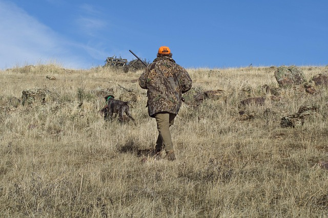

Respectar a normativa
É importante coñecer e cumprir as leis e as normas de seguridade relacionadas coa actividade cinexénica.
Seguridade e prevención
Medidas de seguridade para previr accidentes e protexer ás persoas e respectar ao medio natural .
A seguridade na caza comeza por actuar con responsabilidade e respectar sempre a normativa. As persoas que empregan armas de caza deben coñecer as regras establecidas e cumprir as condicións legais necesarias para a súa utilización.
A maior virtude é a responsabilidade.

É importante coñecer e cumprir as leis e as normas de seguridade relacionadas coa actividade cinexénica.
Antes de realizar calquera actividade, hai que ter ter en conta a presenza doutras persoas e evitar situcións que poidan poñelas en peligro.
A actividade cinexenética debe respectar a narureza os animais e os espazos naturais, evitando deixar residuos no contorno.
Na páxina oficial da Garda Civil podemos consultar información sobre a normativa e a seguridade relacionadas coas armas.